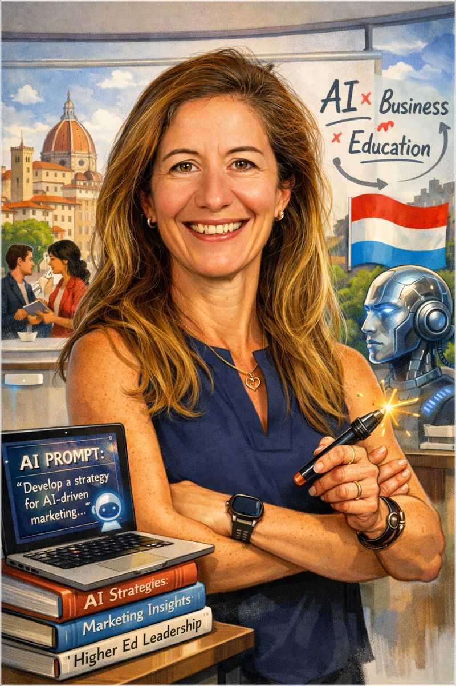
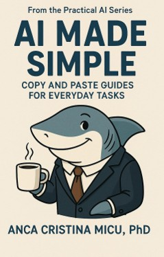
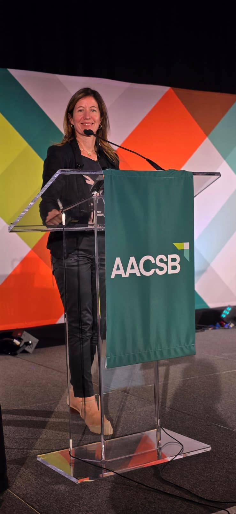
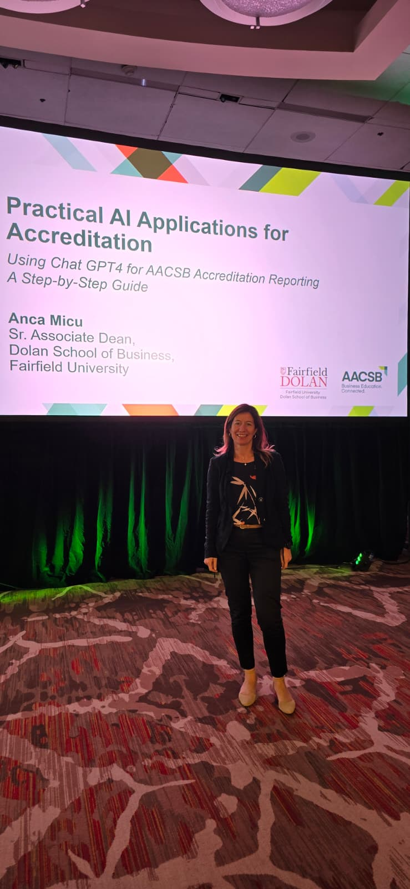

Where advertising instincts, academic rigor, and business school innovation meet.
Anca C. Micu, PhD brings together a rare mix of expertise: long-time marketing professor, senior higher education administrator, AACSB accreditation specialist, scholar of online advertising, and practical guide to responsible AI in business education.
Her career began in 1990s Romania, in the first creative department of the first advertising agency in the country. While studying finance at the Academy of Economic Studies in Bucharest, she chose a copywriting interview at BBDO Romania over the banking path others imagined for her—and was selected from 80 candidates for one of only three openings.




From Bucharest advertising to U.S. academia and business school leadership
In a country reinventing itself, advertising felt revolutionary. Anca worked on brands such as Pepsi, Knorr, Tuborg, and Vodafone at a time when creative communication was suddenly becoming central to business. It was the era of Romania’s own version of Mad Men—fast, improvisational, bold, and deeply human.
That environment taught her to communicate big ideas with very few words. It also taught a lesson that still drives her work today: people do not fear innovation as much as they fear feeling excluded from it.
“AI Made Simple came from the same instinct that guided me in advertising: take something that feels intimidating, find its human logic, and make it usable.”
With encouragement from American colleagues and clients at BBDO, she moved to the United States, earned an MBA, and then a PhD in a field she had already seen transformed by technology—from TV commercials to search, banner ads, social media, and now AI summaries.
A career built across industry, scholarship, and institutional leadership
AI Made Simple
The core idea behind the book is simple: interacting with AI is not mainly about code—it is about communication. The phrasing of the question shapes the answer. That makes AI newly powerful for educators, professionals, and parents who may be curious, but unsure where to begin.
The book turns AI into an approachable conversation rather than a technical wall. It is written for people who want practical benefit, clearer prompts, better judgment, and a more confident way into the future of work and learning.
Strategic, practical, and deeply cross-disciplinary expertise
Marketing & advertising insight
From brand strategy and copywriting to research on online advertising, search, digital engagement, and the future of advertising research.
Business school leadership
Experience connecting academic quality, faculty collaboration, student experience, innovation, rankings, and mission-driven growth.
AACSB & responsible AI
Advises business schools on continuous improvement review preparation, faculty qualifications, coverage analysis, and AI-supported accreditation workflows.